GLITCH GULP HUD · PRZED / A / B
Każda scena to jeden zamrożony kadr prawdziwej gry (main b337835). Przełącznik zmienia wyłącznie warstwę interfejsu, na wszystkich scenach naraz. BEZ UI pokazuje sam kadr, który jest bajt w bajt taki sam pod każdym wariantem. Dotknij sceny, żeby ją powiększyć.
A · PREMIUM MINIMAL
Jeden spokojny materiał: prawie czarne szkło z cienką linią, bez poświaty. Kolor tylko tam, gdzie coś znaczy: barwa tieru na pasku, złoto przy wyniku i liderze, cyjan przy „Ty”.
B · PREMIUM NEON
Głębsza płyta z krawędzią w kolorach wiru (cyjan, fiolet, róż). Tier jako sześciostopniowa drabinka, ranking z paskami wyniku, cele liczone segmentami, minimapa z ramą i pasami ruchu.
Arena · telefon · wczesna faza
Wszystkie podstawowe elementy: pauza, czas, wynik, tier i pasek wzrostu, ranking, combo, minimapa.
Arena · telefon · późna faza
Duży wir T6 w ostatnich sekundach. Panele nie wchodzą w wir; rywal za rankingiem pozostaje widoczny.
Kampania · misja z bossem
Misja M24: dwa cele (węzły 2/3, boss dzielnicy — rdzeń miasta 0/1), komunikat NELA, minimapa dzielnicy.
Wyzwanie dnia · telefon
Ten sam układ co Arena. W wariantach nagłówek rankingu nazywa tryb: WYZWANIE DNIA.
CrazyGames 800×450 · Arena
Kadr portalu 800×450 z komunikatem awansu. Pasek czasu i wyniku przestaje zajmować całą górę.
CrazyGames 800×450 · Kampania
Kampania w kadrze 800×450: cele misji po prawej, kapsuła czasu po lewej.
Desktop 1366×768 · Arena
Desktop 1366×768 z komunikatem wzrostu T6. Interfejs skaluje się jak dziś (×1,24).
Wyzwanie znajomego · telefon
Runda z wyzwaniem znajomego: cel 1500 pkt od „Maja” pod kapsułą czasu.
Minimapa w powiększeniu
Ten sam prostokąt, ta sama wielkość i te same dane co dziś: wszystkie obiekty, rywale (czerwony = większy od Ciebie, jasny pierścień = do zjedzenia), Ty, ramka kamery, nazwa dzielnicy. Nowe jest tylko rysowanie: prawdziwa siatka ulic, kwartały w barwach dzielnic, podświetlona dzielnica, w której jesteś, i hierarchia znaczników.
Arena · telefon · wczesna faza mapa 104×104 px
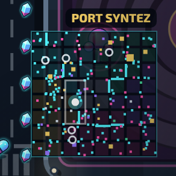
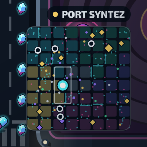
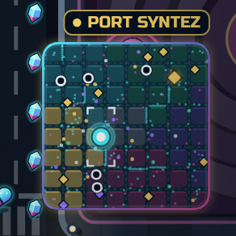
Arena · telefon · późna faza mapa 104×104 px
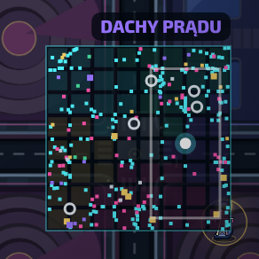
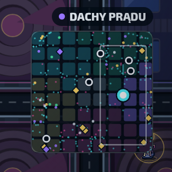
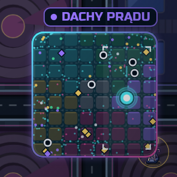
Kampania · misja z bossem mapa 104×104 px
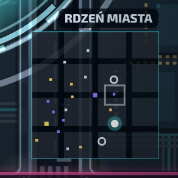
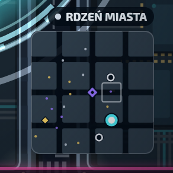
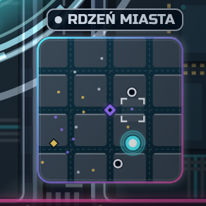
CrazyGames 800×450 · Arena mapa 92×92 px
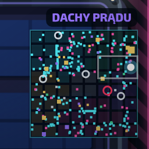
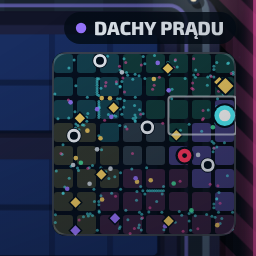
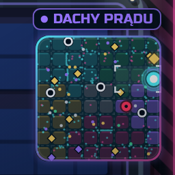
Rekomendacja
Hybryda na bazie B. Materiał, drabinka tieru, ranking i minimapa z B; z A spokojniejsze panele drugiego planu (combo, wyzwanie, „teraz gra”) i zasada jednej poświaty na panel.
- B jest wyraźnie bliżej oprawy Premium Neon Vector i czytelniej pokazuje progres T1–T6.
- Oba warianty zajmują tyle samo miejsca; na CrazyGames i desktopie mniej niż dziś.
- A jest najtańszy we wdrożeniu i najbezpieczniejszy, ale różnica względem obecnego HUD jest mniejsza.